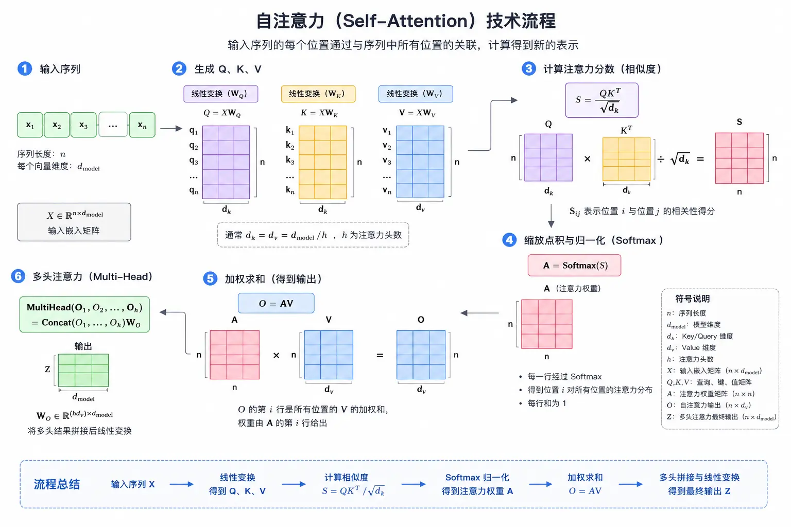

Transformer 深度解析
2017 年，Google 发表论文《Attention Is All You Need》，提出了 Transformer 架构。谁也没想到，这篇论文会彻底改变 AI 领域。
今天的 GPT、Claude、Gemini、Llama……几乎所有主流大语言模型，本质上都是 Transformer 的变体。
理解了 Transformer，就理解了现代 LLM 的 90%。
这篇文章我们会深入 Transformer 的每一个组件：自注意力、多头注意力、位置编码、前馈网络、层归一化……不仅讲"是什么"，更讲"为什么"。
这是技术深度最高的模块之一。我们会用代码演示核心计算，确保你不仅看懂公式，还能亲手实现。
Transformer 前传：RNN 的局限
在 Transformer 出现之前，序列任务（如翻译、文本生成）主要用 RNN（循环神经网络）和它的变体 LSTM、GRU。
RNN 是怎么工作的
RNN 的核心思想是"逐个处理"：输入序列一个词一个词地进入网络，每一步的输出包含之前所有词的信息。
实例
# 简化版 RNN 前向传播演示
# ============================================
import math
class SimpleRNN:
"""简化的 RNN 实现，用于演示原理"""
def __init__(self, input_size: int, hidden_size: int):
"""初始化 RNN 参数"""
import random
random.seed(42) # 设置随机种子保证可复现
# 输入到隐藏层的权重
self.Wx = [[random.uniform(-0.1, 0.1) for _ in range(hidden_size)]
for _ in range(input_size)]
# 隐藏层到隐藏层的权重
self.Wh = [[random.uniform(-0.1, 0.1) for _ in range(hidden_size)]
for _ in range(hidden_size)]
# 偏置
self.b = [0.0 for _ in range(hidden_size)]
def step(self, x: list, h_prev: list) -> list:
"""单步 RNN：输入 x 和前一时刻隐藏状态 h_prev，输出新的隐藏状态"""
hidden_size = len(h_prev)
h_new = [0.0 for _ in range(hidden_size)]
# h_new = tanh(Wx·x + Wh·h_prev + b)
for i in range(hidden_size):
# 计算 Wx·x
wx_sum = sum(x[j] * self.Wx[j][i] for j in range(len(x)))
# 计算 Wh·h_prev
wh_sum = sum(h_prev[j] * self.Wh[j][i] for j in range(hidden_size))
# 加偏置，过 tanh
h_new[i] = math.tanh(wx_sum + wh_sum + self.b[i])
return h_new
def forward(self, sequence: list) -> list:
"""处理完整序列"""
hidden_size = len(self.b)
h = [0.0 for _ in range(hidden_size)] # 初始隐藏状态
hidden_states = []
for x in sequence:
h = self.step(x, h)
hidden_states.append(h)
return hidden_states
# 测试：用简单的向量序列演示
input_size = 4
hidden_size = 3
rnn = SimpleRNN(input_size, hidden_size)
# 假设输入序列是 4 个词，每个词用 4 维向量表示
sequence = [
[1.0, 0.0, 0.0, 0.0], # 词 1
[0.0, 1.0, 0.0, 0.0], # 词 2
[0.0, 0.0, 1.0, 0.0], # 词 3
[0.0, 0.0, 0.0, 1.0], # 词 4
]
hidden_states = rnn.forward(sequence)
print("Runoob 简单 RNN 演示")
print("=" * 40)
for i, h in enumerate(hidden_states):
print(f"第 {i+1} 步隐藏状态: {[f'{v:.4f}' for v in h]}")
# 输出：
# Runoob 简单 RNN 演示
# ========================================
# 第 1 步隐藏状态: ['0.0204', '-0.0434', '0.0556']
# 第 2 步隐藏状态: ['-0.0061', '-0.0529', '0.0775']
# 第 3 步隐藏状态: ['0.0641', '-0.0409', '0.0655']
# 第 4 步隐藏状态: ['0.0143', '-0.0805', '0.0277']
RNN 看起来合理，但它有三个致命问题：
问题一：梯度消失，难以记忆长距离依赖
RNN 是"链式"结构，每一步的梯度要反向传播回第一步。多次相乘后，梯度会指数级衰减，变成几乎 0。
比如句子"我在 2010 年去了巴黎，……，那是我最喜欢的城市"——"城市"要指代"巴黎"，但中间隔了太多词，RNN 很难学到这种长距离依赖。
LSTM 和 GRU 缓解了这个问题，但没有彻底解决。
问题二：无法并行计算，训练慢
RNN 必须等第 t-1 步算完，才能算第 t 步。这意味着：
- 即使有 100 个 GPU，也只能一个词一个词地算
- 序列越长，训练时间越长
- 很难扩展到超大规模数据
问题三：位置靠前的信息容易被"覆盖"
RNN 的隐藏状态是一步步更新的，后面的信息会不断覆盖前面的。句子开头的重要信息，到最后可能已经"稀释"得差不多了。
Transformer 的出现，一次性解决了这三个问题。
| 特性 | RNN/LSTM | Transformer |
|---|---|---|
| 计算方式 | 串行，一步步来 | 并行，一次性算完 |
| 长距离依赖 | 弱，梯度消失 | 强，任意距离直接连接 |
| 位置信息 | 天然有顺序 | 需要位置编码 |
| 训练速度 | 慢 | 快（可并行） |
自注意力机制（Self-Attention）
自注意力是 Transformer 的核心。它的思想很简单：每个词都要和句子里的所有词"交流"一下，看看谁对自己重要，然后按重要程度加权求和。
先看整体架构图：

Q、K、V 的直觉理解
自注意力用三个向量来描述每个词：
- Q（Query，查询）——"我在找谁？"——这个词想关注谁
- K（Key，键）——"我是谁？"——这个词的身份标识
- V（Value，值）——"我有什么？"——这个词的实际内容
计算过程是：
- 每个词用 Q 去和所有词的 K 做"匹配"，得到注意力分数
- 用 Softmax 把分数归一化，总和为 1
- 用归一化后的分数加权求和所有词的 V
看图更清楚：

注意力分数计算公式
完整的公式是：
Attention(Q, K, V) = softmax( Q·Kᵀ / √dₖ ) · V
让我们用纯 Python 一步一步实现它：
实例
# 纯 Python 实现自注意力（Self-Attention）
# ============================================
import math
def softmax(x: list) -> list:
"""计算 Softmax：把一组数变成概率分布，总和为 1"""
# 减去最大值防止数值溢出
max_val = max(x)
exp_x = [math.exp(v - max_val) for v in x]
sum_exp = sum(exp_x)
return [v / sum_exp for v in exp_x]
def matrix_multiply(A: list, B: list) -> list:
"""矩阵乘法：A 是 m×n，B 是 n×p，输出 m×p"""
m = len(A)
n = len(B)
p = len(B[0])
result = [[0.0 for _ in range(p)] for _ in range(m)]
for i in range(m):
for j in range(p):
for k in range(n):
result[i][j] += A[i][k] * B[k][j]
return result
def transpose(matrix: list) -> list:
"""矩阵转置"""
return list(map(list, zip(*matrix)))
class SelfAttention:
"""纯 Python 实现的自注意力层"""
def __init__(self, d_model: int, d_k: int):
"""
初始化自注意力层
d_model: 输入/输出维度
d_k: Q/K 的维度（通常 d_k = d_model / num_heads）
"""
import random
random.seed(42) # runoob：固定随机种子
self.d_model = d_model
self.d_k = d_k
# 初始化 Q, K, V 的投影矩阵
# 实际中这些是训练出来的
self.Wq = [[random.normalvariate(0, 0.1) for _ in range(d_k)]
for _ in range(d_model)]
self.Wk = [[random.normalvariate(0, 0.1) for _ in range(d_k)]
for _ in range(d_model)]
self.Wv = [[random.normalvariate(0, 0.1) for _ in range(d_k)]
for _ in range(d_model)]
def forward(self, X: list) -> list:
"""
自注意力前向传播
X: 输入序列，形状 [seq_len, d_model]
返回: 输出序列，形状 [seq_len, d_k]
"""
seq_len = len(X)
# 步骤 1：计算 Q, K, V
# Q = X·Wq, K = X·Wk, V = X·Wv
Q = matrix_multiply(X, self.Wq)
K = matrix_multiply(X, self.Wk)
V = matrix_multiply(X, self.Wv)
print(" Q 的形状:", len(Q), "×", len(Q[0]))
print(" K 的形状:", len(K), "×", len(K[0]))
print(" V 的形状:", len(V), "×", len(V[0]))
# 步骤 2：计算注意力分数 Q·Kᵀ
K_transposed = transpose(K)
scores = matrix_multiply(Q, K_transposed)
print("\n 原始注意力分数:")
for i, row in enumerate(scores):
print(f" 第 {i} 行: {[f'{v:.4f}' for v in row]}")
# 步骤 3：缩放：除以 √d_k
# 这是为了防止 Softmax 进入梯度饱和区
scale_factor = math.sqrt(self.d_k)
scores_scaled = [[v / scale_factor for v in row] for row in scores]
print("\n 缩放后的注意力分数:")
for i, row in enumerate(scores_scaled):
print(f" 第 {i} 行: {[f'{v:.4f}' for v in row]}")
# 步骤 4：Softmax 归一化
attention_weights = []
for row in scores_scaled:
attention_weights.append(softmax(row))
print("\n 注意力权重（Softmax 后）:")
for i, row in enumerate(attention_weights):
print(f" 第 {i} 行: {[f'{v:.4f}' for v in row]}")
# 步骤 5：加权求和 V
output = matrix_multiply(attention_weights, V)
return output, attention_weights
# ============================================
# 演示：用一个简单例子运行自注意力
# ============================================
# 假设我们有一个 4 词的句子，每个词用 8 维向量表示
# 为了演示，我们用 one-hot + 小随机噪声
d_model = 8
d_k = 6
# 输入序列：4 个词，每个 8 维
X = [
[1.0, 0.0, 0.0, 0.0, 0.0, 0.0, 0.0, 0.0], # 词 0
[0.0, 1.0, 0.0, 0.0, 0.0, 0.0, 0.0, 0.0], # 词 1
[0.0, 0.0, 1.0, 0.0, 0.0, 0.0, 0.0, 0.0], # 词 2
[0.0, 0.0, 0.0, 1.0, 0.0, 0.0, 0.0, 0.0], # 词 3
]
print("=" * 50)
print("Runoob 自注意力演示")
print("=" * 50)
print(f"输入序列长度: {len(X)}")
print(f"输入维度: {len(X[0])}")
print()
attn = SelfAttention(d_model=d_model, d_k=d_k)
output, attention_weights = attn.forward(X)
print("\n" + "=" * 50)
print("自注意力输出:")
print("=" * 50)
for i, row in enumerate(output):
print(f"词 {i} 的输出: {[f'{v:.4f}' for v in row]}")
运行这段代码，你会看到完整的计算过程：Q/K/V 生成、注意力分数计算、缩放、Softmax、最后加权输出。
为什么要除以 √dₖ？
这是一个重要的细节。假设 Q 和 K 的每个元素都是均值 0、方差 1 的随机变量，那么它们的点积的方差是 dₖ。
如果 dₖ 很大（比如 512），点积的值会很大，导致 Softmax 进入"饱和区"——梯度几乎为 0，训练不动。
除以 √dₖ 后，方差变回 1，Softmax 的梯度就健康了。
缩放点积是 Transformer 训练稳定的关键技巧之一。
多头注意力（Multi-Head Attention）
单头自注意力虽然强大，但有个问题：每个词只能"关注"一次。如果我们想让词同时关注多个不同方面呢？
比如在句子"动物园里，老虎追着兔子跑"中：
- "老虎"可能需要一个头关注"动物园"（地点）
- 另一个头关注"兔子"（动作对象）
- 第三个头关注"追"（动作）
多头注意力就是把 Q/K/V 拆分成多个"头"，每个头学不同的注意力模式，最后拼起来。
多头注意力的计算步骤
- 把 Q/K/V 按最后一维拆分成 h 份（h 是头数）
- 每个头独立做自注意力
- 把所有头的输出拼起来
- 过一个线性投影层得到最终输出
公式是：
MultiHead(Q, K, V) = Concat(head₁, head₂, ..., headₕ) · Wₒ 其中 headᵢ = Attention(Q·Wqᵢ, K·Wkᵢ, V·Wvᵢ)
实例
# 纯 Python 实现多头注意力（Multi-Head Attention）
# ============================================
import math
import random
random.seed(42) # runoob：固定随机种子
def softmax(x: list) -> list:
"""计算 Softmax"""
max_val = max(x)
exp_x = [math.exp(v - max_val) for v in x]
sum_exp = sum(exp_x)
return [v / sum_exp for v in exp_x]
def matrix_multiply(A: list, B: list) -> list:
"""矩阵乘法"""
m = len(A)
n = len(B)
p = len(B[0])
result = [[0.0 for _ in range(p)] for _ in range(m)]
for i in range(m):
for j in range(p):
for k in range(n):
result[i][j] += A[i][k] * B[k][j]
return result
def transpose(matrix: list) -> list:
"""矩阵转置"""
return list(map(list, zip(*matrix)))
class MultiHeadAttention:
"""纯 Python 实现的多头注意力层"""
def __init__(self, d_model: int, num_heads: int):
"""
初始化多头注意力
d_model: 模型维度（必须能被 num_heads 整除）
num_heads: 注意力头数
"""
assert d_model % num_heads == 0, "d_model 必须能被 num_heads 整除"
self.d_model = d_model
self.num_heads = num_heads
self.d_k = d_model // num_heads # 每个头的维度
# 初始化投影矩阵
self.Wq = [[random.normalvariate(0, 0.1) for _ in range(d_model)]
for _ in range(d_model)]
self.Wk = [[random.normalvariate(0, 0.1) for _ in range(d_model)]
for _ in range(d_model)]
self.Wv = [[random.normalvariate(0, 0.1) for _ in range(d_model)]
for _ in range(d_model)]
self.Wo = [[random.normalvariate(0, 0.1) for _ in range(d_model)]
for _ in range(d_model)]
def split_heads(self, X: list) -> list:
"""
把最后一维拆分成 num_heads 个头
输入形状: [seq_len, d_model]
输出形状: [num_heads, seq_len, d_k]
"""
seq_len = len(X)
# 重塑: [seq_len, num_heads, d_k]
reshaped = []
for row in X:
head_rows = []
for h in range(self.num_heads):
start = h * self.d_k
end = start + self.d_k
head_rows.append(row[start:end])
reshaped.append(head_rows)
# 转置: [num_heads, seq_len, d_k]
result = []
for h in range(self.num_heads):
head_data = [reshaped[i][h] for i in range(seq_len)]
result.append(head_data)
return result
def combine_heads(self, heads: list) -> list:
"""
把多个头拼回去
输入形状: [num_heads, seq_len, d_k]
输出形状: [seq_len, d_model]
"""
seq_len = len(heads[0])
result = []
for i in range(seq_len):
combined = []
for h in range(self.num_heads):
combined.extend(heads[h][i])
result.append(combined)
return result
def attention_single_head(self, Q: list, K: list, V: list) -> list:
"""单头自注意力"""
# Q·K^T
scores = matrix_multiply(Q, transpose(K))
# 缩放
scale = math.sqrt(self.d_k)
scores_scaled = [[v / scale for v in row] for row in scores]
# Softmax
weights = [softmax(row) for row in scores_scaled]
# 加权求和 V
output = matrix_multiply(weights, V)
return output, weights
def forward(self, X: list) -> list:
"""多头注意力前向传播"""
seq_len = len(X)
# 步骤 1：计算 Q, K, V
Q = matrix_multiply(X, self.Wq)
K = matrix_multiply(X, self.Wk)
V = matrix_multiply(X, self.Wv)
# 步骤 2：拆分成多个头
Q_heads = self.split_heads(Q)
K_heads = self.split_heads(K)
V_heads = self.split_heads(V)
# 步骤 3：每个头独立做自注意力
output_heads = []
all_weights = []
for h in range(self.num_heads):
out, weights = self.attention_single_head(
Q_heads[h], K_heads[h], V_heads[h]
)
output_heads.append(out)
all_weights.append(weights)
# 步骤 4：把所有头拼起来
combined = self.combine_heads(output_heads)
# 步骤 5：最终线性投影
output = matrix_multiply(combined, self.Wo)
return output, all_weights
# ============================================
# 演示多头注意力
# ============================================
d_model = 12
num_heads = 3 # 12 / 3 = 4 维每个头
# 输入序列：4 个词，每个 12 维
X = [
[1.0, 0.0, 0.0, 0.0, 0.0, 0.0, 0.0, 0.0, 0.0, 0.0, 0.0, 0.0],
[0.0, 1.0, 0.0, 0.0, 0.0, 0.0, 0.0, 0.0, 0.0, 0.0, 0.0, 0.0],
[0.0, 0.0, 1.0, 0.0, 0.0, 0.0, 0.0, 0.0, 0.0, 0.0, 0.0, 0.0],
[0.0, 0.0, 0.0, 1.0, 0.0, 0.0, 0.0, 0.0, 0.0, 0.0, 0.0, 0.0],
]
print("=" * 50)
print("Runoob 多头注意力演示")
print("=" * 50)
print(f"d_model = {d_model}, num_heads = {num_heads}")
print(f"每个头的维度: d_k = {d_model // num_heads}")
print()
mha = MultiHeadAttention(d_model=d_model, num_heads=num_heads)
output, all_weights = mha.forward(X)
print("\n各个头的注意力权重:")
for h in range(num_heads):
print(f"\n头 {h}:")
for i, row in enumerate(all_weights[h]):
print(f" 位置 {i}: {[f'{v:.4f}' for v in row]}")
print("\n" + "=" * 50)
print("多头注意力最终输出形状:", len(output), "×", len(output[0]))
print("=" * 50)
for i, row in enumerate(output):
print(f"位置 {i}: {[f'{v:.4f}' for v in row[:6]]}...")
多头注意力的强大之处在于：不同的头会自动学到不同类型的注意力模式。
例如在翻译任务中：
- 有的头关注语法关系（主谓宾）
- 有的头关注指代关系（代词指的是谁）
- 有的头关注局部相邻词
这些模式不是人为设计的，是模型在训练中自动学到的。
位置编码（Positional Encoding）
自注意力有个问题：它是"词袋"模型——不关心词的顺序。"我爱你"和"你爱我"在自注意力看来可能是一样的。
但顺序对语言至关重要。我们需要给模型"注入"位置信息。
正弦位置编码
原始 Transformer 用的是正弦位置编码：
PE(pos, 2i) = sin(pos / 10000^(2i/d_model)) PE(pos, 2i+1) = cos(pos / 10000^(2i/d_model))
其中：
- pos 是位置（0, 1, 2, ...）
- i 是维度索引
- d_model 是模型维度
这个设计很巧妙：
- 每个位置有唯一的编码
- 相对位置可以用线性组合表示（sin(a+b) = sin a cos b + cos a sin b）
- 可以外推到比训练时更长的序列
实例
# 实现正弦位置编码
# ============================================
import math
def sinusoidal_positional_encoding(seq_len: int, d_model: int) -> list:
"""
计算正弦位置编码
返回: [seq_len, d_model] 的位置编码矩阵
"""
pe = [[0.0 for _ in range(d_model)] for _ in range(seq_len)]
for pos in range(seq_len):
for i in range(0, d_model, 2):
# 偶数维度用 sin
div_term = math.pow(10000, 2 * i / d_model)
pe[pos][i] = math.sin(pos / div_term)
# 奇数维度用 cos（如果还有下一个维度）
if i + 1 < d_model:
pe[pos][i + 1] = math.cos(pos / div_term)
return pe
# 演示：生成位置编码
seq_len = 10
d_model = 8
pe = sinusoidal_positional_encoding(seq_len, d_model)
print("=" * 50)
print("Runoob 正弦位置编码演示")
print("=" * 50)
print(f"序列长度: {seq_len}, 维度: {d_model}")
print()
for pos in range(seq_len):
print(f"位置 {pos:2d}: {[f'{v:.4f}' for v in pe[pos]]}")
# 看看相对位置的关系
print("\n" + "=" * 50)
print("验证相对位置的线性关系")
print("=" * 50)
print("位置 0 和位置 1 的编码差异:")
diff = [pe[1][i] - pe[0][i] for i in range(d_model)]
print([f'{v:.4f}' for v in diff])
RoPE：旋转位置编码
正弦位置编码虽然经典，但后来有了更好的方案。现在的主流大模型（如 LLaMA）用的是 RoPE（Rotary Positional Embedding）。
RoPE 的思想是：把位置信息"旋转"进 Query 和 Key 里。
具体做法是对 Q 和 K 的每一对维度做旋转：
[ q₁, q₂, q₃, q₄, ... ] ↓ 旋转 [ q₁·cos mθ - q₂·sin mθ, q₁·sin mθ + q₂·cos mθ, q₃·cos mθ' - q₄·sin mθ', q₃·sin mθ' + q₄·cos mθ', ... ]
RoPE 的优势：
- 自然包含相对位置信息
- 外推性好（长度超过训练时也能用）
- 效果通常比正弦位置编码好
ALiBi：按距离衰减注意力
另一个简单有效的方案是 ALiBi（Attention with Linear Biases）。
它不加位置编码，而是直接给注意力分数加一个偏置：离得越远，分数越低。
ALiBi 的优势是简单，而且对长度外推特别友好。
| 位置编码方法 | 原理 | 优点 | 代表模型 |
|---|---|---|---|
| 正弦位置编码 | sin/cos 函数 | 可外推，计算简单 | 原始 Transformer, BERT |
| 可学习位置编码 | 直接训练 embedding | 表达能力强 | GPT-1/2 |
| RoPE | 旋转 Q/K | 相对位置，效果好 | LLaMA, PaLM |
| ALiBi | 注意力分数加偏置 | 简单，长序列好 | MPT, BLOOM |
前馈网络（FFN）层
每个 Transformer 层里，注意力之后还有一个前馈网络（Feed-Forward Network）。
FFN 的结构
原始 Transformer 的 FFN 是：
FFN(x) = max(0, x·W₁ + b₁) · W₂ + b₂
也就是：线性层 → ReLU 激活 → 线性层。
通常中间维度比输入维度大（比如 d_model=512，中间维度=2048）。
ReLU vs SwiGLU
原始用的是 ReLU，但现在的主流是 SwiGLU：
SwiGLU(x) = (x·W₁ ⊗ sigmoid(x·V₁)) · W₂
其中 ⊗ 是逐元素相乘。
SwiGLU 在很多任务上表现比 ReLU 好，LLaMA、PaLM 等都用它。
为什么 FFN 重要？
- 注意力是"聚合信息"，FFN 是"加工信息"
- FFN 有大量参数，是模型"记忆"知识的主要地方
- 没有 FFN，Transformer 的表达能力会大大降低
实例
# 实现 FFN：ReLU 版和 SwiGLU 版
# ============================================
import math
import random
random.seed(42) # runoob
def relu(x: float) -> float:
"""ReLU 激活函数：max(0, x)"""
return max(0.0, x)
def sigmoid(x: float) -> float:
"""Sigmoid 激活函数"""
if x < -50: # 防止数值溢出
return 0.0
return 1.0 / (1.0 + math.exp(-x))
def linear(x: list, W: list, b: list) -> list:
"""线性层：y = x·W + b"""
output_size = len(b)
output = [0.0 for _ in range(output_size)]
for i in range(output_size):
sum_wx = sum(x[j] * W[j][i] for j in range(len(x)))
output[i] = sum_wx + b[i]
return output
class FFNReLU:
"""ReLU 版 FFN"""
def __init__(self, d_model: int, d_ff: int):
self.d_model = d_model
self.d_ff = d_ff
# 随机初始化参数（实际中训练得到）
self.W1 = [[random.normalvariate(0, 0.1) for _ in range(d_ff)]
for _ in range(d_model)]
self.b1 = [0.0 for _ in range(d_ff)]
self.W2 = [[random.normalvariate(0, 0.1) for _ in range(d_model)]
for _ in range(d_ff)]
self.b2 = [0.0 for _ in range(d_model)]
def forward(self, x: list) -> list:
"""前向传播"""
# 第一层：线性 + ReLU
hidden = linear(x, self.W1, self.b1)
hidden = [relu(v) for v in hidden]
# 第二层：线性
output = linear(hidden, self.W2, self.b2)
return output
class FFNSwiGLU:
"""SwiGLU 版 FFN（更现代的选择）"""
def __init__(self, d_model: int, d_ff: int):
self.d_model = d_model
self.d_ff = d_ff
# SwiGLU 需要两个线性层做门控，再加一个输出层
self.W1 = [[random.normalvariate(0, 0.1) for _ in range(d_ff)]
for _ in range(d_model)]
self.V1 = [[random.normalvariate(0, 0.1) for _ in range(d_ff)]
for _ in range(d_model)]
self.W2 = [[random.normalvariate(0, 0.1) for _ in range(d_model)]
for _ in range(d_ff)]
def forward(self, x: list) -> list:
"""前向传播：SwiGLU"""
# 计算两个线性变换
x1 = linear(x, self.W1, [0.0 for _ in range(self.d_ff)])
x2 = linear(x, self.V1, [0.0 for _ in range(self.d_ff)])
# SwiGLU：x1 * sigmoid(x2)
hidden = [a * sigmoid(b) for a, b in zip(x1, x2)]
# 输出层
output = linear(hidden, self.W2, [0.0 for _ in range(self.d_model)])
return output
# 演示 FFN
d_model = 8
d_ff = 16
# 测试输入
x = [0.1, -0.2, 0.3, -0.4, 0.5, -0.6, 0.7, -0.8]
print("=" * 50)
print("Runoob FFN 演示")
print("=" * 50)
print(f"输入: {[f'{v:.4f}' for v in x]}")
ffn_relu = FFNReLU(d_model, d_ff)
output_relu = ffn_relu.forward(x)
print(f"\nReLU FFN 输出: {[f'{v:.4f}' for v in output_relu]}")
ffn_swiglu = FFNSwiGLU(d_model, d_ff)
output_swiglu = ffn_swiglu.forward(x)
print(f"SwiGLU FFN 输出: {[f'{v:.4f}' for v in output_swiglu]}")
层归一化（Layer Norm）
Transformer 里还有一个重要组件：层归一化（Layer Normalization）。
层归一化做什么
层归一化把每个样本的特征归一化到均值 0、方差 1：
LN(x) = γ ⊗ ((x - μ) / √σ²) + β
其中：
- μ 是 x 的均值，σ² 是 x 的方差
- γ（scale）和 β（shift）是可学习参数
- ⊗ 是逐元素相乘
实例
# 实现层归一化（Layer Normalization）
# ============================================
import math
def layer_norm(x: list, gamma: list, beta: list, eps: float = 1e-6) -> list:
"""
层归一化
x: 输入向量
gamma: 缩放参数
beta: 偏移参数
eps: 小常数防止除零
"""
# 计算均值
mean = sum(x) / len(x)
# 计算方差
var = sum((v - mean) ** 2 for v in x) / len(x)
# 归一化 + 缩放偏移
normalized = []
for xi, gi, bi in zip(x, gamma, beta):
normalized.append(gi * (xi - mean) / math.sqrt(var + eps) + bi)
return normalized
# 演示层归一化
d_model = 6
# 输入向量
x = [1.0, 2.0, 3.0, 4.0, 5.0, 6.0]
# gamma 初始化为 1，beta 初始化为 0
gamma = [1.0 for _ in range(d_model)]
beta = [0.0 for _ in range(d_model)]
print("=" * 50)
print("Runoob 层归一化演示")
print("=" * 50)
print(f"输入: {[f'{v:.4f}' for v in x]}")
output = layer_norm(x, gamma, beta)
print(f"输出: {[f'{v:.4f}' for v in output]}")
# 验证均值和方差
mean_out = sum(output) / len(output)
var_out = sum((v - mean_out) ** 2 for v in output) / len(output)
print(f"\n输出均值: {mean_out:.4f}")
print(f"输出方差: {var_out:.4f}")
Pre-Norm vs Post-Norm
层归一化有两种放法：
- Post-Norm：子层 → 残差 → 归一化（原始 Transformer）
- Pre-Norm：归一化 → 子层 → 残差（现在主流）
Pre-Norm 训练更稳定，现在的大模型几乎都用它。
RMS Norm
RMS Norm 是层归一化的简化版，只算均方根，不减均值：
RMS(x) = sqrt(mean(x²)) RMSNorm(x) = γ ⊗ (x / RMS(x))
RMS Norm 计算更快，效果差不多，LLaMA 等模型用它。
Encoder-Decoder vs Decoder-Only 架构
原始 Transformer 是 Encoder-Decoder 架构，但现在的大语言模型大多是 Decoder-Only。
Encoder-Decoder：用于翻译等任务
Encoder-Decoder 架构：
- Encoder：读入输入序列（如源语言句子），生成上下文表示
- Decoder：基于 Encoder 的输出生成目标序列（如翻译结果）
Decoder 里有两种注意力：
- 掩码自注意力：只能看之前的词（不能看未来）
- 交叉注意力：去关注 Encoder 的输出
适合的任务：机器翻译、语音识别、摘要生成（需要把输入"重写成"输出）。
Decoder-Only：GPT 系列，用于生成
Decoder-Only 架构只有 Decoder，没有 Encoder。它的特点：
- 只有掩码自注意力（因果注意力）
- 自回归生成：一个词一个词地输出
- 适合预训练 + 微调的范式
现在的 GPT、LLaMA、Claude、Gemini……几乎都是 Decoder-Only。
Encoder-Only：BERT 系列，用于理解
Encoder-Only 架构只有 Encoder。它的特点：
- 双向注意力：每个词能看到所有词
- 适合理解任务：分类、命名实体识别、提取式问答
- 用"掩码语言模型"（MLM）预训练
| 架构 | 组件 | 注意力类型 | 代表模型 | 适用任务 |
|---|---|---|---|---|
| Encoder-Decoder | Encoder + Decoder | 双向 + 掩码 + 交叉 | T5, BART | 翻译、摘要 |
| Decoder-Only | Decoder | 掩码（因果） | GPT, LLaMA, Claude | 文本生成 |
| Encoder-Only | Encoder | 双向 | BERT, RoBERTa | 分类、NER |
为什么 Decoder-Only 成为主流？因为它简单，而且在大规模预训练下，生成能力极强。"一刀切"反而比"专门设计"效果更好。
Flash Attention：让注意力计算又快又省内存
标准自注意力的时间和内存复杂度都是 O(n²)，序列长了之后（比如 n=8192），既慢又显存不够。
Flash Attention 是一个关键优化，它在 2022 年的出现，让长序列训练变得可行。
标准注意力的内存瓶颈
标准自注意力需要保存中间结果（注意力权重矩阵），用来做反向传播。对于 n=8192，这是 8192×8192 ≈ 6700 万个元素，光这个就占几十 GB 显存。
Flash Attention 的优化原理
Flash Attention 的核心思想：
- 分块计算：把 Q/K/V 分成小块，一块一块算
- 在线 Softmax：不保存完整的注意力矩阵，用数学技巧在反向时重新计算
- 利用 SRAM：把分块放进 GPU 的高速缓存（SRAM），减少 HBM 访问
结果是：
- 内存复杂度从 O(n²) 降到 O(n)
- 速度快 2-4 倍
- 精度完全一样（数学上等价）
现在的大模型训练几乎都用 Flash Attention 或它的变种（Flash Attention v2、Memory-Efficient Attention 等）。
KV Cache：推理加速原理
训练优化完了，推理（生成）也需要优化。KV Cache 是推理加速的关键。
问题：自回归生成的重复计算
自回归生成时，每生成一个新词，都要重新算一遍之前所有词的 K 和 V——这很浪费。
比如生成第 100 个词时，前 99 个词的 K/V 之前已经算过了，不需要重算。
KV Cache 怎么做
KV Cache 的思想很简单：
- 缓存之前所有位置的 K 和 V
- 生成新词时，只算新词的 K/V，拼到缓存里
- 用完整的 K/V 做注意力
这样每步的计算量从 O(n²) 降到 O(n)，生成速度大幅提升。
实例
# 演示 KV Cache 的原理
# ============================================
import math
import random
random.seed(42)
def softmax(x):
max_val = max(x)
exp_x = [math.exp(v - max_val) for v in x]
sum_exp = sum(exp_x)
return [v / sum_exp for v in exp_x]
def matmul(A, B):
m = len(A)
n = len(B)
p = len(B[0])
result = [[0.0 for _ in range(p)] for _ in range(m)]
for i in range(m):
for j in range(p):
for k in range(n):
result[i][j] += A[i][k] * B[k][j]
return result
def transpose(matrix):
return list(map(list, zip(*matrix)))
class SimpleAttentionWithKVCache:
"""带 KV Cache 的简单自注意力"""
def __init__(self, d_model: int):
self.d_model = d_model
self.Wq = [[random.normalvariate(0, 0.1) for _ in range(d_model)]
for _ in range(d_model)]
self.Wk = [[random.normalvariate(0, 0.1) for _ in range(d_model)]
for _ in range(d_model)]
self.Wv = [[random.normalvariate(0, 0.1) for _ in range(d_model)]
for _ in range(d_model)]
def forward(self, x_new: list, kv_cache: tuple = None) -> tuple:
"""
一步生成，带 KV Cache
x_new: 当前新输入（单个位置）
kv_cache: 之前的 K 和 V，(K_cache, V_cache)
返回: (输出, 新的 kv_cache)
"""
# 计算当前位置的 Q, K, V
q = matmul([x_new], self.Wq)
k = matmul([x_new], self.Wk)
v = matmul([x_new], self.Wv)
# 更新 KV Cache
if kv_cache is None:
K_full = k
V_full = v
else:
K_cache, V_cache = kv_cache
K_full = K_cache + k
V_full = V_cache + v
# 注意力：只拿当前位置的 Q
scores = matmul(q, transpose(K_full))
scale = math.sqrt(self.d_model)
scores_scaled = [[v / scale for v in row] for row in scores]
weights = [softmax(row) for row in scores_scaled]
output = matmul(weights, V_full)
return output[0], (K_full, V_full)
# 演示 KV Cache 生成过程
d_model = 4
# 模拟 4 步生成
inputs = [
[1.0, 0.0, 0.0, 0.0],
[0.0, 1.0, 0.0, 0.0],
[0.0, 0.0, 1.0, 0.0],
[0.0, 0.0, 0.0, 1.0],
]
attn = SimpleAttentionWithKVCache(d_model)
print("=" * 50)
print("Runoob KV Cache 演示")
print("=" * 50)
kv_cache = None
for step, x in enumerate(inputs):
output, kv_cache = attn.forward(x, kv_cache)
K_cache, V_cache = kv_cache
print(f"\n步骤 {step}:")
print(f" KV Cache 大小: {len(K_cache)} 个位置")
print(f" 输出: {[f'{v:.4f}' for v in output]}")
print("\n" + "=" * 50)
print("注意：每一步只计算当前位置的 K/V，")
print("然后拼接到 Cache 里，不用重算之前的！")
print("=" * 50)
KV Cache 有个小代价：需要额外显存存 K 和 V。对于 7B 模型、4k 上下文，KV Cache 大约占 1-2GB 显存——这是值得的。
还有更高级的优化：
- Multi-Query Attention：多个头共享 K/V
- Grouped Query Attention：分组共享 K/V
这些能进一步减少显存占用，提升推理速度。
小结：Transformer 完整流程
让我们把所有组件串起来，总结一下 Transformer 的完整流程。
一个 Decoder-Only Transformer 层
x → LayerNorm → Masked Multi-Head Attention → 残差连接 →
→ LayerNorm → FFN → 残差连接 → 输出
完整的 Decoder-Only 模型
- 输入 token IDs → 词嵌入
- 加位置编码
- 通过 N 个 Transformer 层
- 最终 LayerNorm
- 线性层映射到 vocab 大小
- Softmax 得到下一个词的概率
关键超参数
| 超参数 | 含义 | GPT-2 (124M) | LLaMA-7B | GPT-3 (175B) |
|---|---|---|---|---|
| d_model | 模型维度 | 768 | 4096 | 12288 |
| num_heads | 注意力头数 | 12 | 32 | 96 |
| num_layers | 层数 | 12 | 32 | 96 |
| d_ff | FFN 中间维度 | 3072 | 11008 | 49152 |
| context_len | 上下文长度 | 1024 | 2048/4096 | 2048 |
代码实现指引
如果你想从零实现一个简化的 Transformer，步骤是：
- 实现层归一化
- 实现自注意力（带掩码）
- 实现多头注意力
- 实现 FFN
- 实现 Transformer 层
- 实现位置编码
- 组装完整模型
- 实现训练循环
实际中，我们会用 PyTorch 等框架，而不是纯 Python。这里的纯 Python 实现是为了演示原理，让你理解每一步在做什么。
理解 Transformer 的最好方式是亲手实现一次。哪怕是简化版，也会让你对很多细节有全新认识。

点我分享笔记